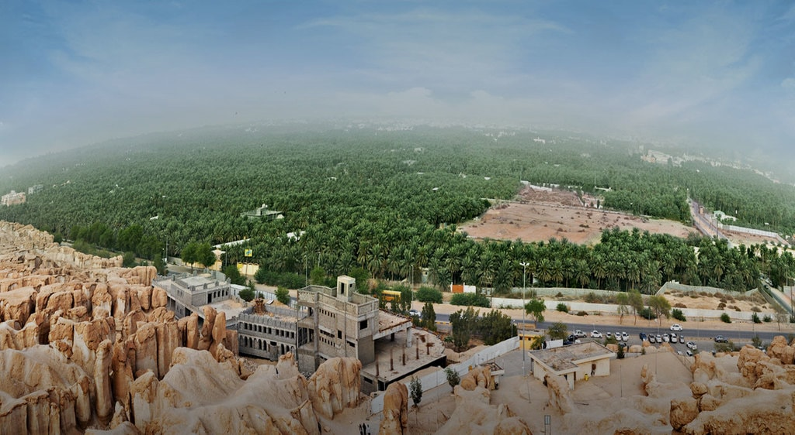

The city of Al-Ahsa is one of the most important Saudi cities and is located in the Eastern Province of the Kingdom of Saudi Arabia, and the meaning of the name Al-Ahsa is the sound of groundwater, and it is one of the largest oases in the world and the largest oasis in the Kingdom of Saudi Arabia because it contains thirty water springs, where it is indicated that its natural water is suitable for irrigation, and extends from the Arabian Gulf to Oman, surrounded by palm trees on all sides and a suitable and moderate atmosphere, and we will learn in this article about the city of Al-Ahsa, its location, and the most important tourist attractions, and its economic activities, and administrative division.
